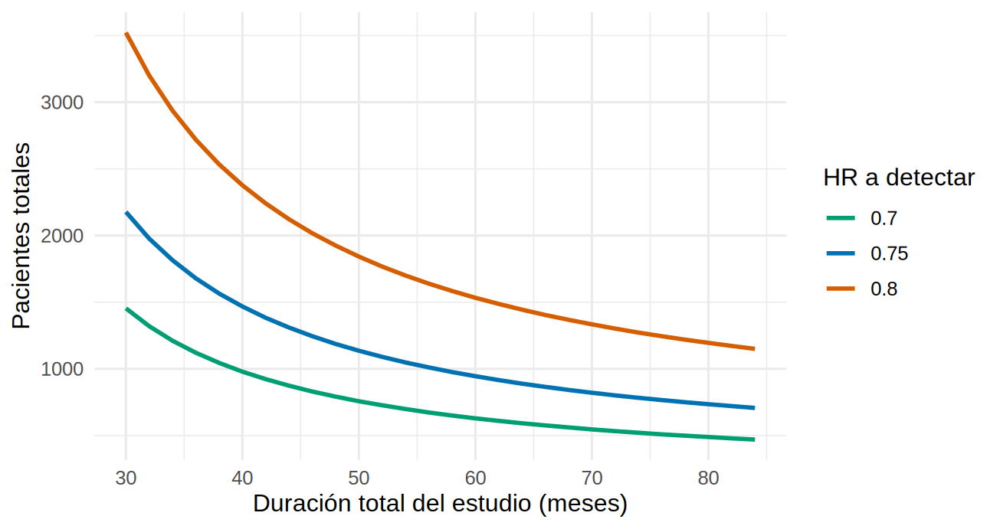

library(tidyverse)
library(survival)
source("R/funciones_extra_a.R") # num(), pct()
source("R/funciones_cap20.R")
source("R/simular_eca_bicarbonato.R")
theme_set(theme_minimal(base_size = 12))
eca <- read_csv("Bases/eca_bicarbonato.csv", show_col_types = FALSE) |> # piloto SIMULADO (Cap. 11)
mutate(brazo = factor(brazo, levels = c("Placebo", "Bicarbonato")))Tamaño de muestra para tiempo hasta un evento: eventos y pacientes
Nota🩺 Escenario
En el piloto de bicarbonato, 640 pacientes dieron apenas 165 eventos de falla renal. El comité quiere ahora un ensayo cuyo desenlace principal sea el tiempo hasta la falla renal (diálisis o trasplante). Un colega propone: «Con 640 pacientes ya tuvimos una señal; pongamos 1 000 y listo». Pero en un estudio de supervivencia la información no la dan los pacientes, la dan los eventos: un paciente que sigue sano al cierre aporta casi nada a la comparación. ¿Cuántos eventos hacen falta, y cuántos pacientes (y cuánto tiempo) para conseguirlos?
Lo que vamos a hacer
- Calcular el número de eventos necesarios con la fórmula de Schoenfeld.
- Convertir eventos en pacientes, según el riesgo esperado, el tiempo de reclutamiento y el seguimiento.
-
Verificar con
rpact(si está instalado) y con simulación consurvival, y ver qué pasa si hay menos eventos de los previstos.
Paso 1: eventos, no pacientes
Para detectar una razón de riesgos (HR, hazard ratio) con una prueba de log-rank o un modelo de Cox, la potencia depende del número total de eventos d. La fórmula de Schoenfeld (1983), con una proporción p de pacientes en el brazo activo, es:
\[ d = \frac{(z_{1-\alpha/2} + z_{1-\beta})^2}{p\,(1-p)\,[\ln(\mathrm{HR})]^2} \qquad \text{(con 1:1, } p = 0.5\text{: } d = \frac{4\,(z_{1-\alpha/2} + z_{1-\beta})^2}{[\ln(\mathrm{HR})]^2}\text{)} \]
Cuanto más cerca de 1 está el HR, más eventos hacen falta. Con nuestra función n_eventos() (la fórmula escrita en una línea):
# A tibble: 5 × 3
hr eventos_1a1 eventos_1a2
<dbl> <dbl> <dbl>
1 0.6 121 136
2 0.7 247 278
3 0.75 380 427
4 0.8 631 710
5 0.9 2829 3182Qué vemos. Para un HR de 0.75 (una reducción del 25 % del riesgo instantáneo) hacen falta 380 eventos con asignación 1:1; para 0.90, 2 829. La asignación 1:2 exige un 12.4 % más de eventos (427 frente a 380), igual que en 20.2. El piloto, con 165 eventos, estaba muy por debajo de lo necesario para un HR de 0.75.
Paso 2: de eventos a pacientes
Los eventos calculados tienen que ocurrir antes del cierre del estudio. Cuántos pacientes necesitas depende de la probabilidad de que cada uno tenga el evento mientras lo sigues. Con un riesgo constante en el tiempo (modelo exponencial, una simplificación), la tasa de eventos del grupo placebo del piloto es:
lambda_por_mes riesgo_12m riesgo_24m
0.0123892 0.1381468 0.2572091 [1] 0.1600148 0.2724985La tasa es de 1.24 eventos por 100 paciente-meses. El modelo exponencial da un riesgo a 24 meses de 26 % frente al 27 % de Kaplan-Meier: una aproximación razonable para planificar.
Ahora el diseño. Suponemos (hipotético) que el reclutamiento dura 24 meses (uniforme) y que el estudio cierra a los 48 meses del inicio, de modo que el último paciente se sigue 24 meses. La probabilidad de evento de un paciente es la media, sobre su momento de entrada, de \(1 - e^{-\lambda \cdot (\text{seguimiento})}\):
\[ P(\text{evento}) = 1 - \frac{e^{-\lambda (T - a)} - e^{-\lambda T}}{\lambda\, a} \qquad (a = \text{meses de reclutamiento},\ T = \text{duración total}) \]
hr <- 0.75; acum <- 24; dur <- 48
eventos <- ceiling(n_eventos(hr))
p0 <- prob_evento(lambda0, acum, dur) # probabilidad de evento en placebo
p1 <- prob_evento(lambda0 * hr, acum, dur) # y en bicarbonato
n_total <- n_pacientes_surv(eventos, lambda0, hr, acum, dur)
c(prob_placebo = p0, prob_bicarbonato = p1, pacientes = n_total, por_grupo = n_total / 2) prob_placebo prob_bicarbonato pacientes por_grupo
0.3574624 0.2828262 1187.0000000 593.5000000 Qué vemos. Un paciente tiene en promedio 32 % de probabilidad de llegar a tener el evento antes del cierre (36 % en placebo, 28 % con bicarbonato). Para reunir 380 eventos hacen falta 1 187 pacientes (593.5 por grupo), unas 5.5 veces los 216 que necesitaba el desenlace continuo de 20.2.
El tiempo cuenta tanto como los pacientes. Alargar el seguimiento reduce el número de pacientes que necesitas, pero con rendimientos decrecientes:
curva_dur <- expand_grid(dur = seq(30, 84, by = 2), hr = c(0.70, 0.75, 0.80)) |>
mutate(pacientes = map2_dbl(dur, hr, \(d, h) n_pacientes_surv(ceiling(n_eventos(h)), lambda0, h, acum, d)))
ggplot(curva_dur, aes(dur, pacientes, color = factor(hr))) +
geom_line(linewidth = 1) +
scale_color_manual(values = c("#009E73", "#0072B2", "#D55E00"), name = "HR a detectar") +
labs(x = "Duración total del estudio (meses)", y = "Pacientes totales")
La curva baja con rapidez entre los 30 y los 48 meses y luego baja cada vez más despacio: añadir seguimiento al final aporta pocos eventos nuevos porque ya no quedan tantos pacientes en riesgo. Reclutar más despacio y seguir más tiempo ahorra pacientes, a cambio de un ensayo más largo y caro.
Paso 3: lo mismo con rpact
El paquete rpact (diseños de ensayos clínicos con análisis interinos) calcula este mismo tamaño. Su getSampleSizeSurvival() pide el riesgo del control (lambda2), el HR, el reclutamiento y el seguimiento después del reclutamiento. Una intensidad de reclutamiento relativa (< 1) le indica que calcule N:
library(rpact)
plan_rpact <- getSampleSizeSurvival(alpha = 0.05, sided = 2, beta = 0.20,
hazardRatio = hr, lambda2 = lambda0,
accrualTime = c(0, acum), accrualIntensity = 0.5,
followUpTime = dur - acum)
tibble(metodo = c("A mano", "rpact"),
eventos = c(n_eventos(hr), plan_rpact$maxNumberOfEvents),
pacientes = c(n_total, plan_rpact$maxNumberOfSubjects)) |>
mutate(across(where(is.numeric), \(x) round(x, 1)))# A tibble: 2 × 3
metodo eventos pacientes
<chr> <dbl> <dbl>
1 A mano 379. 1187
2 rpact 379. 1185.rpact y la versión a mano dan los mismos eventos y el mismo número de pacientes (la diferencia es el redondeo): no hay magia, es la misma fórmula con un envoltorio muy cómodo, y además extiende el cálculo a diseños con análisis interinos (20.7).
Paso 4: verificación con simulación
La fórmula supone riesgos exponenciales, reclutamiento uniforme y HR constante. Simulamos 1 000 ensayos de 1 187 pacientes con exactamente esas reglas (simular_surv()), analizados con un modelo de Cox, y contamos cuántas veces la prueba de puntuación (equivalente al log-rank) es significativa. Se analiza también el escenario sin efecto (HR = 1) para medir el error tipo I:
simular_potencia_surv <- function(n, hr, lambda0, R = 1000, semilla = 20, perdida_mes = 0) {
set.seed(semilla)
res <- replicate(R, {
d <- simular_surv(n, hr, lambda0, acum, dur, perdida_mes)
c(p = summary(coxph(Surv(tiempo, evento) ~ brazo, data = d))$sctest[["pvalue"]], eventos = sum(d$evento))
})
tibble(potencia = mean(res["p", ] < 0.05), eventos_medios = mean(res["eventos", ]))
}
sim_h1 <- simular_potencia_surv(n_total, hr, lambda0) # HR = 0.75
sim_h0 <- simular_potencia_surv(n_total, 1, lambda0) # HR = 1: mide el error tipo I
bind_rows(`HR = 0.75` = sim_h1, `HR = 1` = sim_h0, .id = "escenario")# A tibble: 2 × 3
escenario potencia eventos_medios
<chr> <dbl> <dbl>
1 HR = 0.75 0.818 380.
2 HR = 1 0.056 424.Qué vemos. Con HR = 0.75 la potencia simulada es 81.8 % (error de Monte Carlo ±1.3 puntos) frente al 80 % de la fórmula: una diferencia de 1.8 puntos. Los ensayos acumularon en promedio 380 eventos, casi exactamente los 380 calculados. Con HR = 1 los falsos positivos fueron 5.6 % (nominal 5 %). La fórmula funciona cuando se cumplen sus supuestos.
Paso 5: si hay menos eventos de los previstos
El peor escenario práctico no es que el HR sea algo distinto, sino que el riesgo del control sea menor de lo supuesto (los pacientes de un ensayo suelen estar más sanos que los de una cohorte). Supongamos que la tasa real es 30 % menor, con los mismos 1 187 pacientes:
sim_bajo <- simular_potencia_surv(n_total, hr, 0.7 * lambda0)
sim_bajo# A tibble: 1 × 2
potencia eventos_medios
<dbl> <dbl>
1 0.687 282.potencia_eventos(sim_bajo$eventos_medios, hr) # lo que predice Schoenfeld con esos eventos[1] 0.6750824La potencia se desploma a 69 %: con la misma muestra y el mismo efecto, los ensayos reunieron 282 eventos en lugar de 380. Fíjate en la última línea: la fórmula de Schoenfeld, aplicada a los eventos realmente observados, predice 68 %, casi lo que dio la simulación. Los eventos lo explican todo. Por eso los ensayos de supervivencia se diseñan «dirigidos por eventos»: el análisis final se hace cuando se alcanza el número de eventos, y se prolonga el seguimiento (o se reclutan más pacientes) si la tasa resulta menor.
Paso 6: la fórmula frente al ensayo del libro
El simulador del ensayo de bicarbonato (Cap. 11) no es exponencial ni de riesgos constantes: hay efecto de centro, pacientes más y menos riesgosos, incumplimiento y censura al azar. ¿Sigue valiendo Schoenfeld? Simulamos 600 ensayos de 640 pacientes con el simulador del libro, analizados por ITT, y comparamos con lo que predice la fórmula usando el HR ITT verdadero (de un ensayo gigante) y los eventos observados:
set.seed(1)
grande <- simular_eca_bicarbonato(n = 60000, semilla = 5)$datos |>
mutate(brazo = factor(brazo, levels = c("Placebo", "Bicarbonato")))
hr_itt <- unname(exp(coef(coxph(Surv(tiempo_meses, estado == 1) ~ brazo, data = grande)))) # verdad ITT
res_libro <- sapply(1:600, \(s) {
d <- simular_eca_bicarbonato(640, semilla = s)$datos
c(p = summary(coxph(Surv(tiempo_meses, estado == 1) ~ brazo, data = d))$sctest[["pvalue"]],
eventos = sum(d$estado == 1))
})
c(hr_itt_verdadero = hr_itt, eventos_medios = mean(res_libro["eventos", ]),
potencia_simulada = mean(res_libro["p", ] < 0.05),
potencia_schoenfeld = potencia_eventos(mean(res_libro["eventos", ]), hr_itt)) |> round(3) hr_itt_verdadero eventos_medios potencia_simulada potencia_schoenfeld
0.793 147.897 0.315 0.291 Qué vemos. El HR ITT verdadero es 0.79 (más cerca de 1 que el 0.70 de los cumplidores, por la no adherencia: 20.7). Con 148 eventos de media, la potencia simulada del ensayo de 640 pacientes fue de 32 % y la fórmula predice 29 % (error de Monte Carlo ±1.9 puntos): la fórmula sigue siendo útil aunque el mundo no sea exponencial, siempre que uses el HR que de verdad estimará el análisis (ITT) y los eventos reales. Un ensayo con esa probabilidad de salir significativo para el efecto ITT verdadero tiene muchas posibilidades de ser no concluyente, como el de 11.2.
Trampas frecuentes
Advertencia⚠️ Lo que la fórmula no ve
- Riesgos no proporcionales: si el HR cambia con el tiempo (un efecto que tarda en aparecer), Schoenfeld subestima lo que necesitas. Comprueba la proporcionalidad (Cap. 9) y considera la diferencia de tiempos de supervivencia restringida.
- Riesgos competitivos: si muchos pacientes mueren antes de la falla renal, los eventos de interés serán menos de lo calculado con una tasa «cruda». Planifica con la tasa de eventos esperada en presencia de la muerte, o usa un desenlace compuesto.
-
Pérdidas de seguimiento y cruces: reducen los eventos observados (20.7). Con
perdida_mesensimular_surv()puedes ver cuánto. - Tomar el HR del piloto: con 165 eventos, el HR del piloto tiene un IC muy amplio (11.2).
Importante🎯 En resumen
- La potencia de un ensayo de supervivencia depende de los eventos. Para HR = 0.75 con 1:1 hacen falta 380 (Schoenfeld).
- Para pasar de eventos a pacientes necesitas la tasa de eventos del control, el tiempo de reclutamiento y la duración. Con los supuestos de este subcapítulo: 1 187 pacientes;
rpacty la versión a mano coinciden. - La simulación con
survivaldio una potencia de 82 % y una media de 380 eventos, como la fórmula. - Si la tasa de eventos es menor de lo previsto, la potencia cae (69 % con una tasa 30 % menor): diseña dirigido por eventos.
- Planifica con el HR ITT esperado, no con el efecto en quienes cumplen.
Ejercicio
- Calcula con
n_pacientes_surv()cuántos pacientes harían falta si el reclutamiento dura 36 meses y el estudio cierra a los 60 meses. ¿Por qué baja N respecto a los 1 187 del Paso 2? - Verifica por simulación (con
simular_potencia_surv()) que con asignación 1:2 (usap = 2/3enn_eventos()) se necesitan más eventos pero se mantiene el 80 % de potencia. (Pista:simular_surv()asigna 1:1; modifícala.) - Con
simular_surv(perdida_mes = 0.005)simula un 5 % de pérdidas al año. ¿Cuánto cae la potencia con el N del Paso 2?